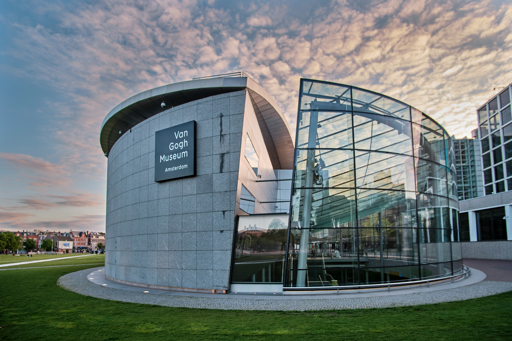
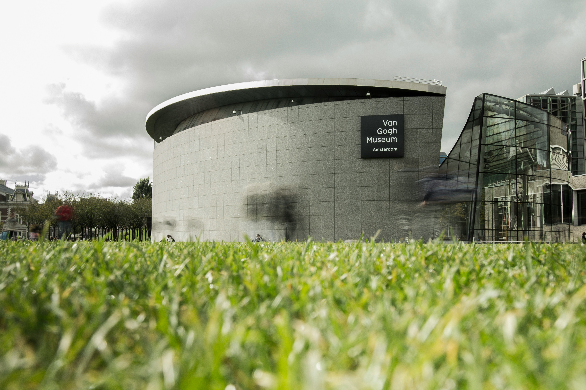

Γενικότερα, το Μουσείο Βαν Γκογκ είναι μουσείο τέχνης του Άμστερνταμ, το οποίο περιλαμβάνει κυρίως έργα του Ολλανδού ζωγράφου Βίνσεντ βαν Γκογκ αλλά και άλλων σύγχρονών του καλλιτεχνών. Περιέχει τη μεγαλύτερη συλλογή πινάκων του βαν Γκογκ σε όλο τον κόσμο[9]. Το 2017 ήταν το μουσείο με τη μεγαλύτερη επισκεψιμότητα στην Ολλανδία, με 2,26 εκατομμύρια επισκέπτες[10].
Το Μουσείο Βαν Γκογκ αποτελείται από δύο κύρια κτίρια. Το κύριο κτίσμα σχεδιάστηκε απ' τον Γκέριτ Τόμας Ρίτβελντ αλλά μετά τον θάνατό του το 1964 το έργο του ολοκληρώθηκε τελικά από τους συνεργάτες του J. van Dillen και J. van Tricht, το 1973[9]. Το εσωτερικό του κτίσματος υπέστη μία μεγάλη ανακαίνιση την περίοδο 1988-1999 από τον Martien van Goor. Μια δεύτερη πτέρυγα εκθέσεων (Exhibition Wing), επέκταση του μουσείου, ολοκληρώθηκε το 1999 από τον Ιάπωνα αρχιτέκτονα Κίσο Κουροκάβα.
In general, the Van Gogh Museum is an art museum located in Amsterdam, which primarily features the works of the Dutch painter Vincent van Gogh as well as other contemporary artists. It contains the largest collection of Van Gogh paintings in the world. In 2017, it was the most visited museum in the Netherlands, with 2.26 million visitors.
The Van Gogh Museum consists of two main buildings. The main building was designed by Gerrit Thomas Rietveld, but after his death in 1964, the work was eventually completed by his collaborators, J. van Dillen and J. van Tricht, in 1973. The interior of the building underwent a major renovation from 1988 to 1999 by Martien van Goor. A second exhibition wing, an extension of the museum, was completed in 1999 by the Japanese architect Kisho Kurokawa.

Η μόνιμη έκθεση του μουσείου περιλαμβάνει έργα του βαν Γκογκ, χρονολογικά, από την περίοδο της εφηβείας του μέχρι το τέλος της ζωής του. Ανάμεσα στους πίνακες που ξεχωρίζουν ανήκει και μία εκδοχή από τα Ηλιοτρόπια. Το μουσείο διαθέτει ακόμα βιβλιοθήκη με υλικό που αφορά στη ζωή και το έργο του βαν Γκογκ. Παράλληλα φιλοξενούνται και έργα άλλων σημαντικών καλλιτεχνών, όπως του Εντουάρ Μανέ, του Πωλ Γκωγκέν, καθώς και ένα γλυπτό του Ωγκύστ Ροντέν.
Το 2017 ήταν το μουσείο με τη μεγαλύτερη επισκεψιμότητα στην Ολλανδία, με 2,26 εκατομύρια επισκέπτες. Η μόνιμη έκθεση του μουσείου περιλαμβάνει έργα του βαν Γκογκ, χρονολογικά, από την περίοδο της εφηβείας του μέχρι το τέλος της ζωής του. Ανάμεσα στους πίνακες που ξεχωρίζουν ανήκει και μία εκδοχή από τα Ηλιοτρόπια. Το μουσείο διαθέτει ακόμα βιβλιοθήκη με υλικό που αφορά στη ζωή και το έργο του βαν Γκογκ. Παράλληλα φιλοξενούνται και έργα άλλων σημαντικών καλλιτεχνών, όπως του Εντουάρ Μανέ, του Πωλ Γκωγκέν, καθώς και ένα γλυπτό του Ωγκύστ Ροντέν.
The permanent exhibition of the museum includes works by Van Gogh, chronologically from his teenage years to the end of his life. Among the paintings that stand out is a version of the Sunflowers. The museum also has a library containing materials related to the life and work of Van Gogh. Concurrently, it hosts works by other significant artists such as Édouard Manet, Paul Gauguin, and a sculpture by Auguste Rodin.
In 2017, it was the museum with the highest visitation in the Netherlands, with 2.26 million visitors. The permanent exhibition includes works by Van Gogh from his teenage years until the end of his life. Among the notable paintings is also a version of the Sunflowers. The museum also maintains a library with materials pertaining to Van Gogh's life and work. Additionally, it hosts works by other important artists such as Édouard Manet, Paul Gauguin, as well as a sculpture by Auguste Rodin.